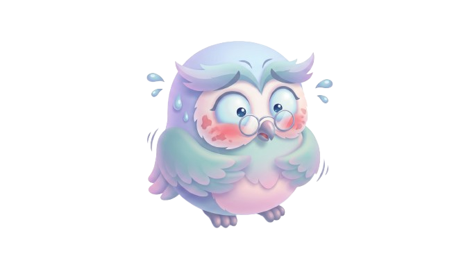
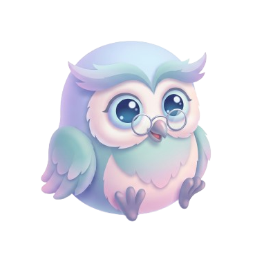
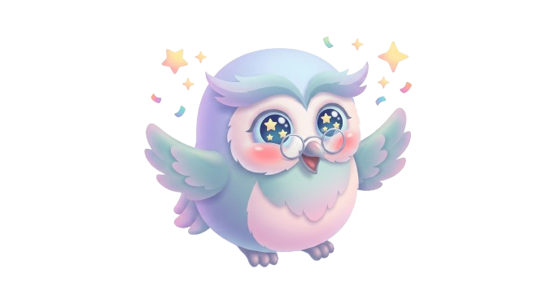

Bagaimana suasana hati dan pikiranmu saat ini? Tenang.in hadir mendampingi setiap langkahmu.
Pilih emosi yang menggambarkan rasamu saat ini untuk mencatatnya dengan instan.



Kamu tidak pernah sendirian. Jika sewaktu-waktu merasa terbebani, cemas berlebihan, atau membutuhkan teman bicara profesional, layanan konselor resmi Indonesia siap mendampingimu.
Layanan Kesehatan Jiwa 24 Jam
Konseling Psikologi HIMPSI & KSP
Konseling & Pemulihan Trauma
Tenang.in hadir untuk refleksi mandiri harian. Jika kamu berada dalam situasi darurat emosional, jangan ragu untuk langsung menghubungi tim profesional di atas.